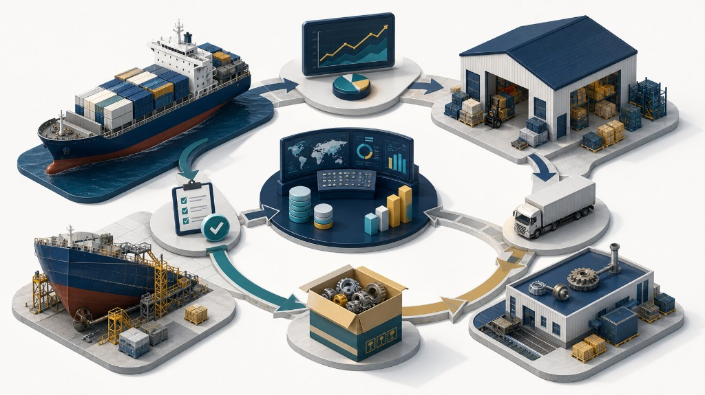

以 6,944 TEU × 10 艘貨櫃船船隊三年實際運轉、保養與採購紀錄驗證。
01 | 研究定位
從單船經驗採購，轉向船隊層級的資料化決策。
這項研究處理的不是單一零件買多或買少，而是船隊可靠度、維修效率、母港補給與採購成本之間的整合管理問題。
論文主題概述
航運公司若只依靠各船或個別維修工程師提出備品需求，總部很難掌握整體船隊未來需求。本研究希望建立一套可計算、可追蹤、可更新的方法，協助管理者提前預測維修備品需求，並決定何時採購、採購多少。
本研究回答的問題
- 如何預測各船未來的備品需求？
- 如何區分再生零件需求與全新零件需求？
- 如何把各船需求整合成船隊週需求？
- 如何決定全新零件的最佳採購批量？
研究案例
本研究以船舶主機燃油閥為個案，因為燃油閥需求與主機運轉時數、定期保養、再生加工與報廢率密切相關，適合作為船隊備品需求預測與採購規劃的驗證對象。
論文中的個案資料範圍
論文第四章以個案公司 6,944 TEU × 10 艘貨櫃船船隊作為資料基礎，使用 2018 年 1 月 1 日至 2020 年 12 月 31 日的主機運轉、燃油閥保養與採購紀錄。研究不是只做單次成本比較，而是把每日運轉、保養間隔、船期週別、回母港補給與再生加工結果整理成可反覆計算的需求模型。
02 | 研究切入
用 PDCA 看這篇研究：備品管理是一個持續校準的決策循環。
這個角度能讓船東與船舶管理者快速理解：論文不是只提出一次性的採購計算，而是建立一套可以反覆更新、查核與改善的船隊備品管理流程。
統計消耗模式，預測長期備品需求
整理過去船舶運轉紀錄、燃油閥保養紀錄、航線週期與再生零件報廢率，推估各船未來回母港時的備品需求。
輸出：船隊週需求、全新件需求、再生件需求。執行長期採購規劃與供應商談判
依照 MRP 與 Silver-Meal 方法規劃採購批量與下單時點，並把長期需求作為供應商議價、交期協調與備品補給安排的依據。
輸出：採購批量、下單週期、供應商協議。監控備品消耗、使用與庫存狀況
透過 MPDC 與 ERP 料帳追蹤全新件、再生良品與報廢件流向，檢視實際消耗是否符合預測，並確認船上安全庫存與服務水準。
輸出：消耗偏差、庫存狀態、需求滿足率。分析執行偏差，修正需求預測模型
將實際消耗、報廢率變化、供應商交期與船舶維修情形回饋到模型，調整下一期備品需求預測與採購規劃。
輸出：修正後預測、改善規則、下一輪計畫。03 | 實務痛點
船舶備品管理的困難，來自海上營運的不確定性。
船舶不能像陸上工廠一樣隨時補料，備品通常必須配合靠港、回母港、維修週期與再生加工結果安排。
缺料風險
備品不足會影響船舶保養、設備運轉與航線穩定，缺料風險最後會轉化為營運風險。
庫存成本
若各船因保守而多買，船上與岸上庫存會累積，造成資金占用與持有成本上升。
可視性不足
需求分散在各船與工程師手上時，總部難以做船隊層級的採購規劃、成本控管與供應商協調。
論文第一章整理出的四項管理挑戰
- 全新零件與再生零件的補給由個別維修工程師分散管理，沒有以整體船隊為單位整合，容易錯過船舶回母港時程並產生額外補救成本。
- 再生零件需求難以精確估算，燃油閥更換會受到船期提前或延後保養、燃油品質不良、全新件與再生件品質差異等因素影響。
- 各船航線週期不同，回母港時間不同，使全新零件與再生零件的週需求難以合併統計；再生件報廢又必須等待加工廠判定，讓新件需求更複雜。
- 全新零件採購缺乏成本評估模式，第一線船員可能因擔心缺料而提高申請數量，導致過量庫存、重複訂購與存貨持有成本增加。
04 | 研究方法
以三段式架構，把資料轉成可執行的採購計畫。
研究從各船運轉與保養資料開始，彙整為船隊週需求，再用動態批量方法規劃全新零件採購時點與數量。
需求預測
以主機運轉時數與燃油閥保養紀錄推估各船未來回母港時可能產生的維修備品需求。
船隊整合
運用 MRP 將不同船舶、不同航線週期與不同回母港時點整合為整體船隊週需求。
採購規劃
採用 Silver-Meal Heuristic，在採購成本、訂購成本與存貨成本之間推算較合理的採購批量。
從原始資料到採購決策的計算細節
論文第四章將研究流程拆成幾個可執行的程序：先用各船各汽缸前後兩次燃油閥保養的主機運轉小時差，計算燃油閥保養間隔時數；再結合每日主機運轉小時與航線週期，推估船舶回母港前可能發生的保養次數與備品需求。
在採購批量規劃中，論文以週為時間單位，將全新零件採購前置時間設定為 12 週；燃油閥再生加工前置時間則可用於判斷 MPDC 是否需要事前保留再生加工產能與安全存量。
05 | 管理架構
以 MPDC 作為母港集中備品管理節點。
MPDC 將全新零件、再生良品與報廢零件納入同一個物流與料帳架構，讓備品流向與成本資訊可以同步被管理。

船上安全庫存
保留必要維修能力
各船仍需保有合理備品，確保航行期間維修安全與服務水準。
母港集中補給
降低重複持有庫存
其餘備品集中於 MPDC 管理，提高共用效率並降低過量採購。
ERP 料帳同步
追蹤物料流與成本
建立全新備品庫、再生良品備品庫與報廢備品庫，支援查核與持續改善。
MPDC 導入後的料帳與物流流向
論文第三章建議在 ERP 中建立明確的料帳，讓船舶、MPDC、零件加工廠與供應商之間的物料流可以被追蹤。
這個設計的重點，是把「補給上船、送修再生、再生完成、報廢、新件入庫」全部變成可查核的交易紀錄。
06 | 實證結果
理想模式顯示，過去採購與實際船隊需求沒有有效對齊。
本研究以個案公司 2018 年 1 月 1 日至 2020 年 12 月 31 日資料驗證，比較理想採購模式與歷史實際採購行為。
理想模式 vs. 實際採購成效比較
以個案公司 6,944 TEU × 10 艘貨櫃船船隊、2018-2020 年三年歷史數據（主機燃油閥）驗證，結果如下：
備品採購數量
有效減少
整體總成本
最高可節省
訂購成本
最多降低
存貨成本差異
改善 9600%
| 指標 | 理想模式 | 歷史實際模式 | 相對視覺 | 管理意義 |
|---|---|---|---|---|
| 採購數量 | 660 個 | 943 個 | 歷史實際採購量明顯偏高 | |
| 訂購次數 | 31 次 | 40 次 | 歷史模式有較多重複訂購 | |
| 採購成本 | USD 198,000.00 | USD 282,900.00 | 過量採購造成成本增加 | |
| 訂購成本 | USD 496.00 | USD 640.00 | 訂購次數增加帶來額外成本 | |
| 存貨成本 | USD 145.29 | USD 14,092.84 | 歷史模式庫存等待與持有成本高 | |
| 總成本 | USD 198,641.29 | USD 297,632.84 | 整體成本差距明顯 |
管理意義：問題不是單純「有沒有備品」，而是採購數量、訂購時點與船隊實際需求沒有對齊，導致過量採購與庫存成本被放大。
從實證資料看出的細項發現
論文第五章指出，6,944 TEU × 10 艘貨櫃船船隊各船燃油閥保養間隔時數大致集中於 800 至 900 小時，每日主機運轉時數約在 16 小時左右；但歷史實際採購數量卻呈現顯著差異，表示採購行為未必與設備實際運轉需求同步。
敏感度分析也指出，當燃油閥保養間隔時數 RHPM 下降到歷史水準的 80% 以下時，總成本可能出現明顯變化。因此 RHPM 不只是模型參數，也可以作為船隊保養品質與成本風險的監控指標。
07 | 實務價值
這套模型讓備品管理更可預測、更可控。
對船東、船舶管理者、船隊技術主管與採購主管而言，研究價值在於把經驗式補貨轉化成可稽核的管理循環。
船隊整合管理
由總部掌握整體船隊未來需求，降低各船重複採購與資訊分散。
資料化需求預測
用主機運轉、保養紀錄、航線週期與報廢率推估需求，而不只依賴主觀申請。
新件與再生件同步
同時管理送修、再生成功、報廢判定與全新零件補充。
採購管理循環
可連結採購申請、下單提醒、交貨查核、品質驗收與 PDCA 改善。
成本與服務水準平衡
在缺料風險、維修需求滿足率與總成本之間取得更穩健的決策平衡。
船隊整合管理
資料化需求預測
母港集中補給
MRP
Silver-Meal Heuristic
MPDC
採購與庫存成本控制
營運風險管理
導入後可以支援的管理決策
論文結論指出，模型的價值不只在於算出較低的總成本，而是讓管理者能在短期掌握採購計畫與設備運轉狀況，在長期估算整體成本與供應風險。這些預測資料也能成為採購部門與供應商談判、預先保留產能、安排交貨時點的依據。
08 | 延伸應用
延伸應用潛力
本研究以燃油閥作為案例驗證，方法論可延伸至更廣泛的船舶設備與營運場景。
主機其他相關備品整合
排氣閥、活塞等同型設備有類似保養模式，但保養間隔更長、備品更昂貴，部分無法再生。整合主機相關備品需求預測，可大幅提升成本控管精度。
發電機備品管理
貨櫃船配備 3–5 部發電機，與主機有類似的內燃機特性。多機組並聯運轉的複雜性若能突破，建立後將填補船上第二大設備成本管理的空白。
航線船期轉換分析
實際運作中航線調度頻繁，船期受塞港等因素影響顯著。未來需研究船舶航線變動對主機運轉時數與母港補給規劃的影響，提升預測模型的動態適應能力。
自動化監控與動態調整
將保養紀錄與主機運轉資料持續自動化導入計算模型，實現即時監控（Real-time Monitoring）與動態調整（Dynamic Adjustment），減少人工介入並降低作業程序成本。
Conclusion
船舶備品管理不只是採購問題，而是船隊可靠度、維修效率與營運成本控制的整合管理問題。
本研究用資料與模型，讓船隊備品需求變得更可預測，讓母港補給與採購規劃更可控，也讓船東與船舶管理公司能用更低成本維持營運安全。
用一句話介紹：運用船舶運轉與保養資料，預測整體船隊的維修備品需求，並透過母港集中管理與採購批量規劃，降低缺料風險、過量採購與庫存成本。